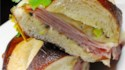
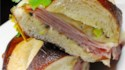

We will now show you how to construct the most amazing ham and cheese you've ever had. The ham and cheese was popularized in 1894 when they were the only food being sold in New York baseball parks. The origins of the sandwich are believed to have come from an 18th century Irish immigrant.
Ingredients
Directions